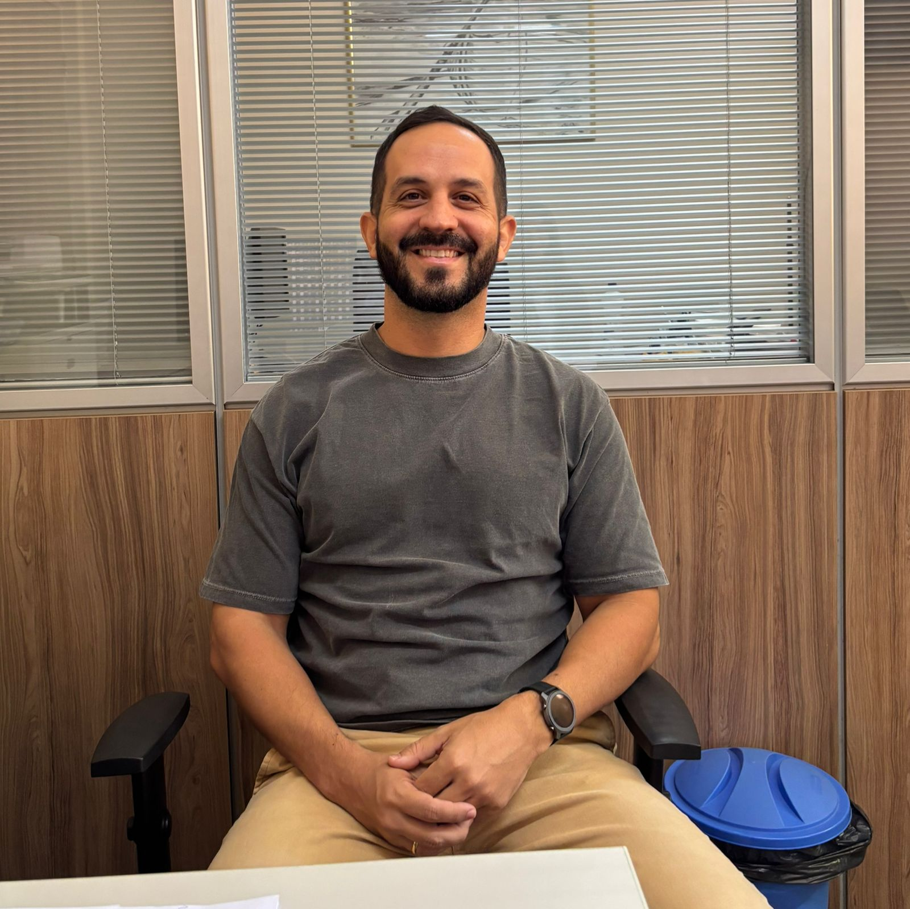

Rangel Nunes
Diretor de Ensino e professor de Informática, relata como a profissão o escolheu. Enfatiza a responsabilidade da escola em formar o aluno integralmente, não apenas em conteúdo.
Os relatos que inspiram e transformam.

1. Trajetória e Contribuição na Instituição
Edenise Alves Pereira é professora de Física no Campus Floriano desde 1997, quando a instituição tinha apenas três anos. Ela sempre preferiu ministrar aulas para as turmas de primeiro ano, pois gostava de "lapidar" esses alunos. Com o passar do tempo e o surgimento de novos cursos, ela expandiu sua atuação, lecionando também em cursos superiores de Informática e em licenciaturas de Ciências da Natureza. Embora hoje atue como gestora — e tenha passado muitos anos na Coordenação de Controle Acadêmico (CCA) —, ela afirma que sempre se viu como professora. Sua missão atual é garantir que a instituição se mantenha relevante e “nunca perca sua importância”para a região e para os alunos que por ali passaram, mantendo um legado de dedicação.
2. A Vocação para Cuidar
Para Edenise, ser professor é, intrinsecamente, saber que se terá que cuidar, e por isso ela a considera uma das profissões mais difíceis que existem. Ela não planejou ser professora, mas descobriu que a profissão a colocava diariamente em contato com pessoas. Ela observou que os alunos, especialmente os adolescentes, não procuram apenas um professor que transmita conteúdo, mas sim “alguém que cuide”. Esse cuidado é visto por ela como pedagógico e humano. Ela acredita que a diferença reside em pequenos gestos, como saber o nome do aluno e estar presente. Ela relembrou o caso de um ex-aluno que quis desistir e, ao voltar, ela apenas disse: “Que bom que você voltou”. Anos depois, ele revelou que essa frase simples o motivou a continuar.
3. Sentimento de Responsabilidade e Propósito
A professora afirmou sentir-se muito responsável pelos alunos. Em épocas de turmas numerosas, ela se esforçava para conhecer todos, chegando a saber o sobrenome dos alunos quando trabalhava no Controle Acadêmico. Ela lamentava quando não percebia que um aluno vinha à escola, mas não assistia às aulas, sentindo que não havia sido atenta o suficiente. Edenise sempre acreditou que o ensino deve ser para todos, inclusive para aqueles que não demonstram interesse imediato, pois o objetivo é despertar a curiosidade. Ela costumava dizer: “Não estou aqui só para ensinar quem já quer aprender. Estou aqui para despertar o interesse de quem ainda não quer."
4. Vínculos que Permanecem
A educadora tem inúmeras boas lembranças, tanto de colegas de trabalho comprometidos (como o falecido professor Santil) quanto de ex-alunos que se tornaram amigos ou colegas de profissão. O que mais a gratifica é ver os ex-alunos bem-sucedidos, com família, emprego e "valores sólidos. Uma situação particularmente marcante foi encontrar um ex-aluno que recebia seu diploma de mestrado em Matemática e que a reconheceu como sua professora no ensino médio. Ela percebeu, naquele momento, que o vínculo entre professor e aluno, construído com cuidado, “permanece vivo” mesmo com o passar do tempo.
5. O Cuidado Consigo Mesma
Edenise busca ativamente o autocuidado hoje. Ela aprendeu a “não transformar tudo em problema” e a respeitar seu próprio tempo. Embora as pessoas a vejam como uma pessoa tranquila e calma, ela se compara ao “bicho-preguiça”, que é *“calmo por fora, mas por dentro está atento, preparado”. Ela considera que cuidar de si é essencial, pois muitas pessoas dependem dela. Seu autocuidado se manifesta em atividades simples, como limpar a casa, arrumar o quintal, e assistir a séries leves e engraçadas, evitando filmes que possam gerar estresse ou ansiedade, preferindo o que a faz sorrir e relaxar.
6. A Necessidade de Apoio Recíproco
A professora observou que nem sempre quem cuida recebe o apoio necessário. Segundo ela, há uma expectativa de que quem cuida seja “sempre forte” e não precise de ajuda, e isso acaba se tornando um fardo. Ela defende que, em algum momento, todos precisam ser cuidados também, reconhecendo a vulnerabilidade inerente ao ato de cuidar.
7. Mensagem para Outros Cuidadores
A mensagem final de Edenise é um chamado ao autocuidado: “Quem cuida precisa se cuidar.” Ela ressalta que, se ela não estiver bem, não conseguirá desempenhar bem seu papel em nenhuma de suas esferas de cuidado (trabalho, alunos, família). Ela defende que o cuidado deve ser coletivo e uma rede de apoio mútua. Para ela, “Ninguém cuida bem sozinho.”

Eget mattis at, laoreet vel amet sed velit aliquam diam ante, dolor aliquet sit amet vulputate mattis amet laoreet lorem.

Eget mattis at, laoreet vel amet sed velit aliquam diam ante, dolor aliquet sit amet vulputate mattis amet laoreet lorem.

Eget mattis at, laoreet vel amet sed velit aliquam diam ante, dolor aliquet sit amet vulputate mattis amet laoreet lorem.